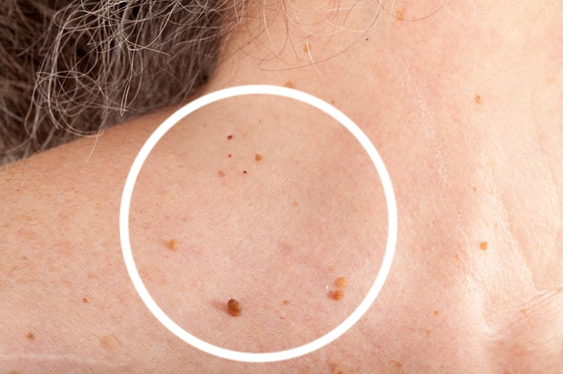

- Beatriz Redondo)
- 115 comentarios
- 227 710 vistas
¡LOS PAPILOMAS SON CAUSADOS POR PARÁSITOS EN SU CUERPO!
Según las estadísticas, más de mil millones de personas en todo el mundo están infectadas con parásitos. La forma más precisa de diagnosticar una infección es una erupción de papilomas en el cuerpo.
Si una persona tiene papilomas en la piel, significa que las colonias de parásitos mortales se han asentado en sus órganos internos y están carcomiendo lentamente su carne.
Los científicos han descubierto la verdadera razón de la aparición de papilomas en el cuerpo humano: infecciones parasitarias. Estudios recientes han demostrado que los principales productos de desecho de los parásitos son tóxicos y crean un ambiente favorable en el estómago para el desarrollo de bacterias mucosas. Por causa de esto, las personas infectadas con parásitos pueden observar papilomas en sus cuerpos..
Hablaremos de este fenómeno médico con Elena Moreno Contreras, dermatovenereóloga-cosmetóloga de la más alta categoría (experiencia: más de 15 años).
Editora: Elena, ¡buenas tardes! Empecemos con la pregunta más importante: ¿es cierto que la mayoría de la población del Perú está parasitada?
Dr. Elena Moreno Contreras: Sí. Lamentablemente, el Perú ocupa uno de los primeros lugares en esta triste estadística en América Latina y en general en el mundo. La razón de esto es la mala situación ecológica, la inacción de las autoridades y la indiferencia de la propia gente por su salud.
Cada año, millones de personas mueren a causa de enfermedades causadas por parásitos. Si miras los certificados de defunción, no verás ninguna causa de muerte allí. Las excepciones son muy raras y, por regla general, se trata de situaciones en las que no se puede ignorar la infección (por ejemplo, cuando el corazón está obstruido por gusanos). Es una desventaja para las autoridades médicas admitir el alto nivel de infestación parasitaria y el hecho de que aproximadamente el 89% de todas las muertes son causadas por parásitos. Además, las enfermedades causadas por parásitos obligan a la gente a acudir a las clínicas y comprar medicamentos caros. Es una industria comercial particular.
Editora: ¿Son los papilomas realmente un signo de infecciones parasitarias?
Dr. Elena Moreno Contreras: Sí. Varios investigadores coinciden en que los productos de excreción de los parásitos provocan la aparición de papilomas en la piel humana. Además, si ve papilomas en su piel, significa que los parásitos ya se han asentado en su cuerpo y están poniendo huevos activamente. En la última instancia, esto significa que cualquier persona que tenga papilomas en la piel está en peligro de muerte.
Nuevamente, alrededor del 89% de todas las muertes, incluidas las llamadas "muertes naturales", tienen una causa común: los parásitos comen lentamente a una persona desde adentro.
Editora: Por lo general, los parásitos son helmintos, lo que puede provocar la aparición de papilomas en la piel. ¿Cómo pueden causar la muerte?
Dr. Elena Moreno Contreras: En realidad es un gran error. Hay una gran cantidad de diferentes tipos de parásitos que viven en diferentes órganos, lo que conlleva una gran variedad de consecuencias. Además, los gusanos, y más aún los helmintos, son bastante peligrosos. Literalmente destruyen los intestinos, haciendo que se pudran, y luego dejan de funcionar por completo. Por cierto, incluso los helmintos son difíciles de detectar y eliminar.
Además, hay miles de parásitos que pueden vivir en el hígado, el cerebro, los pulmones, la sangre o el estómago. Y casi todos ellos son mortales. Algunos de ellos inmediatamente comienzan a actuar agresivamente y destruyen el cuerpo. Otros parásitos pasan desapercibidos hasta que su número llega a ser tan grande que el cuerpo ya no puede resistirlos, lo que lleva a la muerte de una persona. Provocan una serie de complicaciones mortales: infartos, tumores cancerosos, cirrosis hepática, nefritis, daño renal, etc.
Al mismo tiempo, puedo decir con confianza que casi todo el mundo está infectado con parásitos. La mayoría de ellos son extremadamente difíciles de detectar. Y cuando las consecuencias de una infección parasitaria se hacen evidentes, los médicos tratan de eliminarlos. Incluso en una autopsia, se necesitan pruebas especiales para detectar parásitos (al menos, para la mayoría de ellos).
Los papilomas son el único signo universal que determina con precisión una infección parasitaria en el cuerpo humano.
Editora: ¿Usted puede nombrar ejemplos específicos de invasiones médicas?
Dr. Elena Moreno Contreras: Te puedo contar cientos de casos. Pero, quizás, me centraré en aquellos ejemplos que ilustran el peligro de los parásitos.
1. Situaciones con final feliz. Un paciente se quejaba de dolor abdominal recurrente. El examen mostró que todo su intestino estaba obstruido con gusanos. Literalmente cavaron un laberinto, comenzó una invasión y la persona estaba al borde de la sepsis. Parte del intestino fue extirpado durante la operación. Se eliminaron los gusanos y el tejido en descomposición. Después de una semana en la UCI, el paciente se sintió mejor.
2. Útero con una colonia de parásitos en su interior. Desgraciadamente ya no se pudía quitarlos, ya que los parásitos y sus larvas llenaron por completo el útero, multiplicando su volumen muchas veces. Por lo tanto, tuvo que ser eliminado por completo. Mientras tanto, la mujer fue rescatada, pero el envenenamiento del cuerpo fue demasiado fuerte y murió 3 años después después de numerosas terapias.
3. Quistes equinocócicos del corazón. La enfermedad se reconoció demasiado tarde. El médico tratante creía que el hombre simplemente tenía una enfermedad coronaria y angina de pecho, pero la verdad resultó ser mucho más cruel. La operación fue inútil, el tratamiento conservador tampoco ayudó. El trasplante de corazón tampoco funcionó (no hubo donantes). Como resultado, el paciente murió en coma.
Editora: ¿Cómo puede enterarse de una infestación de parásitos?
Dr. Elena Moreno Contreras: Desafortunadamente, no existen métodos confiables para diagnosticar parásitos en humanos. Esto se debe en parte a que hay tantos tipos de parásitos (se conocen más de 2000 especies). A veces son muy difíciles de probar. Un control completo de parásitos solo se puede hacer en unos pocos lugares en Perú y cuesta mucho dinero.
Los primeros síntomas que indican la presencia de parásitos en el cuerpo:
- papilomas
- mal aliento
- alergias (sarpullido, lagrimeo, secreción nasal)
- erupciones y enrojecimiento de la piel
- resfriados frecuentes, dolor de garganta, congestión nasal
- fatiga crónica (fatiga rápida en casa)
- dolores de cabeza frecuentes
- estreñimiento o diarrea
- dolor articular y muscular
- nerviosismo, insomnio o trastornos de la alimentación
- círculos oscuros debajo de los ojos
Si se observa al menos uno de los síntomas, entonces, con una probabilidad del 99%, los parásitos están presentes en su cuerpo. ¡Debe deshacerse de ellos lo antes posible!
Editora: ¿Cómo deshacerse de los parásitos y protegerse de su aparición en el futuro?
Dr. Elena Moreno Contreras: Muchas medicinas modernas que se usan para tratar las infestaciones parasitarias son problemáticas. Por supuesto, existen medicamentos altamente especializados que pueden limpiar el cuerpo de helmintos. Existen medicamentos más o menos efectivos contra ciertos tipos de gusanos del corazón y parásitos hepáticos. Sin embargo, el principal problema es que solo tratan un determinado tipo de parásito. Cada persona está infectada con al menos 7-8 especies. Si tomamos las cifras promedio, por cada persona infectada hay 11-14 tipos de parásitos.
Hasta la fecha, solo existe una solución confiable para deshacerse de los parásitos. El remedio antiparasitario se llama . Se trata de gotas vegetales naturales a base de amaranto, gingo biloba y ambrosia mari. En total, la fórmula del medicamento contiene 10 ingredientes activos. Los estudios clínicos han mostrado resultados sorprendentes. No obstante, queda prohibida la exportación del producto al exterior hasta tanto se abastezca a toda la población del Perú.
Editora: ¿Qué hace que sea tan especial? ¿En qué se diferencia este remedio de otros antiparasitarios?
Dr. Elena Moreno Contreras: Como dije, este es el único remedio que funciona contralos parásitos en todo el mundo. Estas gotas ayudan a eliminar todo tipo de parásitos en nuestro cuerpo en un 100%: es suficiente tomar dos veces al día 25 gotas durante un curso (4-6 semanas). Es por eso que este remedio es tan popular entre las cadenas de farmacias internacionales y las compañías farmacéuticas. En comparación con otros medicamentos antiparasitarios, ataca el espectro completo de parásitos que pueden infectar el cuerpo humano. Teniendo en cuenta los problemas de diagnóstico, esto le permite limpiar eficazmente todo el cuerpo. Ya he mencionado que es casi imposible determinar qué tipo de parásito ha atacado su cuerpo. destruye y elimina todos los parásitos que viven en cualquier parte del cuerpo, en cualquier órgano, desde el cerebro y el corazón hasta el hígado y los intestinos. Ningún otro medio actualmente disponible puede hacer esto.
Este no es un agente químico, sino un producto completamente natural que no causa reacciones alérgicas, no altera el equilibrio natural de la microflora intestinal. Además, este medicamento no tiene otros efectos secundarios asociados con los medicamentos tradicionales para los parásitos.

1. La efectividad de , calculada de acuerdo con el método generalmente
aceptado (la
relación entre el número de pacientes curados y el número total de pacientes en un grupo de 100 personas
que tomaron el medicamento):
- eliminación de helmintos y huevos: 99%
- normalización de función y estado del hígado: 80%
- eliminación de la dermatitis alérgica: 90%
- eliminación de gastritis, úlceras y diarreas: 90%
- eliminación de la anemia: 99%
- eliminación de papilomas y verrugas: 99%
2. No se han identificado efectos secundarios negativos ni reacciones alérgicas.
3. se considera el remedio líder en la lucha contra los parásitos en
el cuerpo humano.
Además de Perú, el producto también ha sido certificado en otros países de América Latina: México, Venezuela, Brasil, Colombia, Chile. Los estudios clínicos en estos países confirmaron plenamente los datos peruanos. Brasileños y chilenos incluso informaron sobre las tasas de curación más altas. El ciclo de estudios clínicos de también se ha completado en Europa, en la Universidad Alemana de Parasitología. Los países europeos están muy interesados en este remedio. Sin excepción, todas las pruebas han demostrado que el producto tiene una eficacia extremadamente alta contra los parásitos.
Editora: A nuestros lectores les gustaría saber dónde comprar con descuento.
Dr. Elena Moreno Contreras: El descuento para es una oferta por tiempo limitado. Actualmente, la oferta solo es válida en algunas regiones.
Para obtener al mejor precio, debe participar en la promoción. Para hacer esto, gire la Rueda de la Fortuna a continuación en este sitio, y quizás la suerte le sonría y gane el descuento máximo del 50% en el producto. Después de eso, complete una breve solicitud con su nombre y número de teléfono para que el operador pueda contactarlo. Si consigue dejar una solicitud, entonces el producto todavía está en stock. Garantizo personalmente que todas las solicitudes en el sitio web darán como resultado el envío del medicamento con el descuento indicado.
Editora: Elena, ¿hay algo más que le gustaría decir a nuestros lectores antes de terminar nuestra entrevista?
Dr. Elena Moreno Contreras: Todos debemos cuidar nuestra salud. A menudo no lo sabemos, pero los parásitos viven dentro de nosotros con una probabilidad del 97-98%. Pueden estar en cualquier parte: en la sangre, en los intestinos, en los pulmones, en el corazón o incluso en el cerebro. Los parásitos literalmente le comen por dentro, mientras envenenan su cuerpo. El resultado son numerosos problemas de salud que pueden acortar la esperanza de vida entre 15 y 25 años. Ni siquiera quiero mencionar el problema de la muerte súbita, que generalmente se asocia con la exposición a parásitos en el cuerpo humano. No esperen hasta que sea demasiado tarde. ¡Actuen ahora!

Atentamente, Dra. Elena Moreno Contreras
El paquete fue entregado muy rápidamente.
Atentamente, Dra. Elena Moreno Contreras.
Atentamente, Dra. Elena Moreno Contreras
Atentamente, Dra. Elena Moreno Contreras
Atentamente, Dra. Elena Moreno Contreras
Atentamente, Dra. Elena Moreno Contreras
Atentamente, Dra. Elena Moreno Contreras